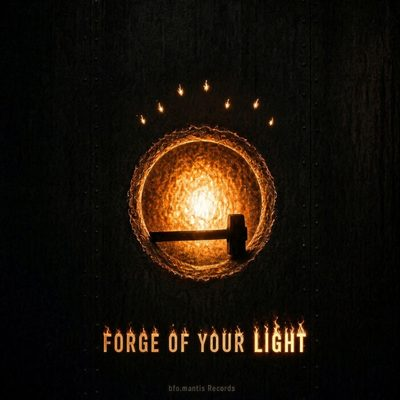

Press info · Single · Upcoming

Forge of Your Light
bfo.mantis
A tribute to a mother pictured as a blacksmith who hammered seven children into shape in the forge of home.
- ReleasedRelease date
- Type
- Single
- Genre
- Metal
- Label
- bfo.mantis Records
- UPC
- 700904236894

Artwork © 2026 bfo.mantis Records. Provided for press and editorial use.
About the release
A tribute to a mother pictured as a blacksmith who hammered seven children into shape in the forge of home. Faith, endurance and family legacy ring through every image of fire and tempered metal.
Listen
Contact
For press, booking, licensing or anything else, reach bfo.mantis through the Discord server or send a message on Patreon.
Message on Discord (opens in a new tab)Message on Patreon (opens in a new tab)